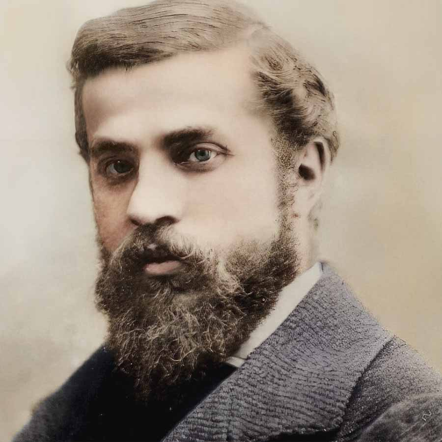
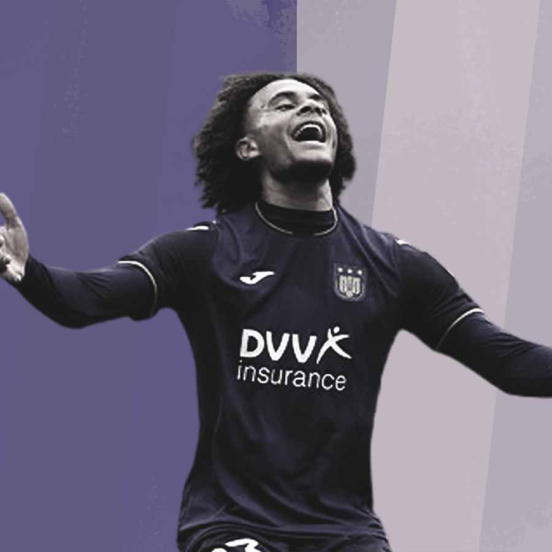
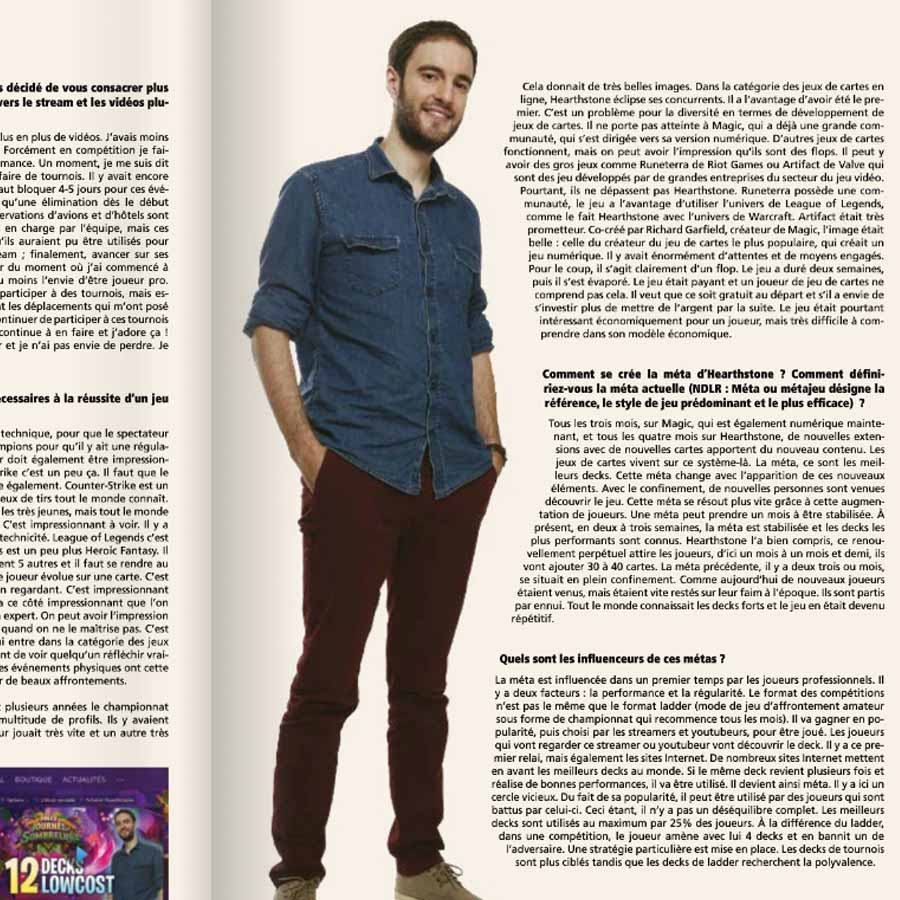
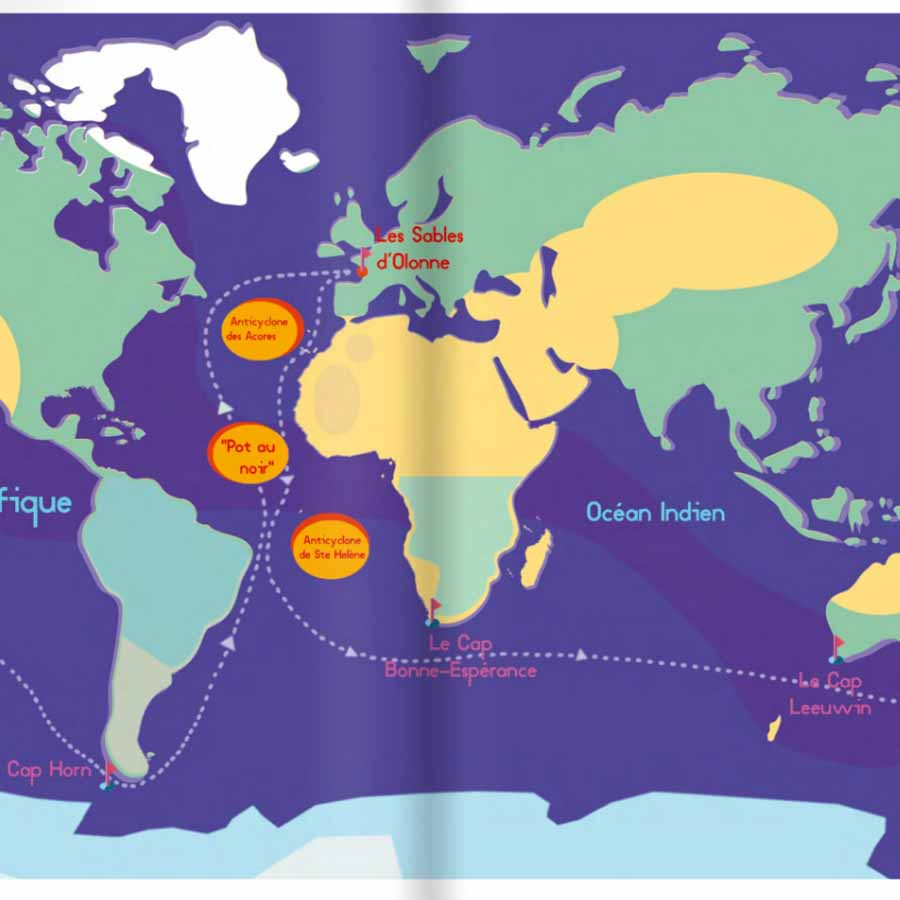
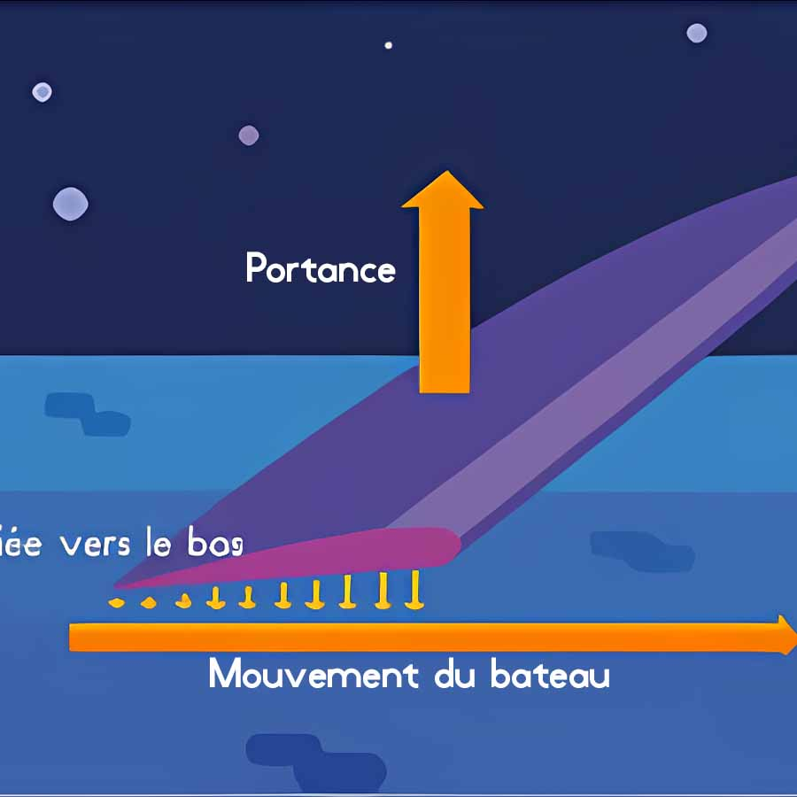
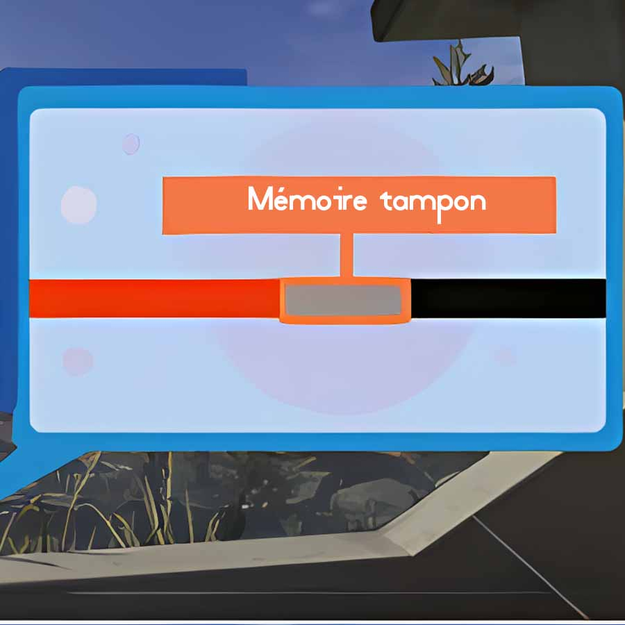

Archives créatives / 10 projets
Écrire, illustrer,
mettre en forme.
Mes premiers travaux éditoriaux et graphiques : interviews, créations visuelles et infographies. Une autre façon de découvrir la sensibilité créative qui accompagne mon métier actuel.
 Édition / Direction graphiqueModerniser une maquette
Édition / Direction graphiqueModerniser une maquette 
Illustration / ColorisationMettre Gaudí en couleur Contenu / Réseaux sociauxDonner vie à l’actualité
Contenu / Réseaux sociauxDonner vie à l’actualité 
Contenu / IllustrationPoser l’atmosphère d’un article Rédaction / InterviewRencontrer Charlie Dalin
Rédaction / InterviewRencontrer Charlie Dalin 
Rédaction / InterviewDécouvrir les métiers de l’esport Rédaction / VulgarisationExplorer la réalité mixte
Rédaction / VulgarisationExplorer la réalité mixte 
Illustration / CartographieTracer le voyage du Vendée Globe
Illustration / InfographieExpliquer le fonctionnement d’un foil
Illustration / VulgarisationRendre la mémoire tampon visible05 / Contact
Et si on
échangeait ?
Stratégie média, Social Ads, mesure de performance
ou simplement une conversation autour de nos métiers.